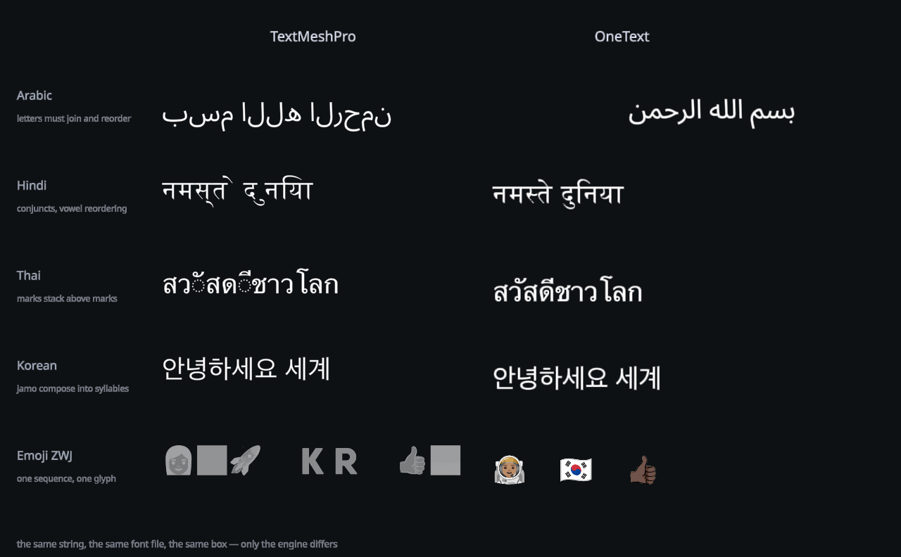

Your engine speaks English.
Your players don't.

performance
Anyone can win the benchmark they chose. So here are all of them: medians, tails, draw calls, and the runs we lose.5 The medians are mostly a tie. But a player never feels the median. A player feels the frame that arrives late.
| global ui · 60 labels, language switch | OneText | TMP dynamic | |
|---|---|---|---|
| median | 0.446 ms | 0.454 ms | tie |
| p99 | 1.385 ms | 14.438 ms | 10× |
| worst frame | 6.875 ms | 351.800 ms | 51× |
| draw calls | 1 | 5 | 5× |
| chat stream · 30 lines, CJK churn | OneText | TMP dynamic | TMP static2 |
|---|---|---|---|
| median | 0.216 ms | 0.658 ms | 0.091 ms |
| p99 | 0.480 ms | 10.003 ms | 0.126 ms |
| worst frame | 0.599 ms | 12.325 ms | 0.182 ms |
| draw calls | 1 | 6 | 2 |
| characters it can draw | 100 % | 100 % | 60 % |
| world-space · 200 labels, 50 retexted per frame3 | OneText | TMP dynamic | |
|---|---|---|---|
| median | 0.630 ms | 0.632 ms | tie |
| p99 | 0.814 ms | 0.759 ms | −7 % |
| worst frame | 0.933 ms | 0.850 ms | −10 % |
| draw calls | 1 | 3 | 3× |
| unseen glyphs · 5 labels/frame, none prebakeable | OneText | TMP dynamic | |
|---|---|---|---|
| median | 1.032 ms | 12.380 ms | 12× |
| p99 | 1.598 ms | 36.146 ms | 23× |
| worst frame | 4.036 ms | 43.836 ms | 11× |
| draw calls | 1 | 8 | 8× |
| … and at 50 labels/frame4 | OneText | TMP dynamic | |
|---|---|---|---|
| median | 11.419 ms | 4.384 ms | −62 % |
| p99 | 15.142 ms | 191.701 ms | 13× |
| worst frame | 16.736 ms | 254.569 ms | 15× |
| draw calls | 1 | 18 | 18× |
| texture memory | 4 MB fixed | 20 MB growing | 5× |
| characters it drew | 100 % | 79 % |
1 The range across the four scenarios: 11× (unseen glyphs) to 51× (a global UI switching language). The scenario with no atlas work, short ASCII labels over a warm atlas, has nothing to win and is a tie on the median, a few per cent behind at the tail. It is published here with the rest.
2 A static atlas, frozen at build time, does no atlas work at all, and cannot draw two characters in five of this corpus. A smaller job, not a faster engine.
3 The scenario built to suit the other engine: nothing to shape, nothing to bake, nothing a correct engine can be correct at. It used to lose by 16 %; it is now a tie on the median.
4 TMP's 62 % median win is bought with thirty-two atlas pages, 20 MB of texture, one character in five undrawn, and 191 ms frames while the atlas grows. OneText holds 4 MB and one draw call; its worst frame is 16.7 ms.
5 Apple M4 Pro, Unity 6000.0.77, Burst compiled ahead of the run,
null graphics device, identical scenes and frame loops; median of 3
repetitions per cell, chosen by p99. Harness, scenarios and raw per-frame
CSVs in Docs/BENCHMARKS.md, losses included, because a
comparison that lists only its wins is an advertisement.
install
Add the package. Put a label on a canvas. Type in any language on Earth: no atlas to bake, no charset to declare, nothing to configure first.
// Packages/manifest.json { "dependencies": { "com.onetext.core": "https://github.com/CodeOneLabs/OneText.git" } }
// or: Add Component > OneText > Label var label = go.AddComponent<OneTextLabel>(); label.SetFont(File.ReadAllBytes(path)); label.FontSize = 38; label.Text = "สวัสดีชาวโลก";
label.SetFont(latin, arabic, thai, emoji); label.Language = "ja"; // locl: Han unification label.CjkLatinSpacing = true; label.PunctuationCompression = true;
label.CharactersPerSecond = 28; label.RevealGranularity = Syllable; label.SkipToEnd(); // the mash-to-skip button label.RestartReveal();
It is all included.
Except the paywall.
in the box
One package. Every feature. Nothing sold separately. Somewhere else, this list is a price sheet.
<wait=>, skip, per-unit callback, per-cluster effects and a custom-effect APImigrate
It is a MaskableGraphic, so everything you already know just works:
RectTransform, layout groups, ContentSizeFitter,
masks, raycasting. Rename the component, keep your habits.
Boring, on purpose.
| TextMeshPro | OneText | note |
|---|---|---|
TextMeshProUGUI | OneTextLabel | same component slot |
.text | .Text | rename only |
.fontSize | .FontSize | rename only |
.font (baked asset) | .SetFont(bytes, …fallbacks) | no atlas to bake first |
.enableWordWrapping | .Wrap | NoWrap / Wrap |
TMP_InputField | OneTextInputField | composition is handled, not worked around |
| fallback font list per asset | one call, one shared atlas | fallbacks do not split the draw |
888,289 tests.
Zero failures.
correctness
Unicode publishes a test for every algorithm it defines. OneText runs all of them, on every commit: 888,289 cases, zero failures. Correct isn't a claim here. It's a build step.
| suite | standard | cases | result |
|---|---|---|---|
| BidiTest | UAX #9 · by class | 770,241 | PASS |
| BidiCharacterTest | UAX #9 · by character | 91,707 | PASS |
| LineBreakTest | UAX #14 | 19,338 | PASS |
| emoji-test | UTS #51 | 3,781 | PASS |
| WordBreakTest | UAX #29 | 1,944 | PASS |
| GraphemeBreakTest | UAX #29 | 766 | PASS |
| SentenceBreakTest | UAX #29 | 512 | PASS |
| every official suite | no exceptions | 888,289 | PASS |
Then once more, against real fonts: every assigned codepoint in Unicode 17.0.0, shaped, outlined, rasterized and placed. All 159,631 of them.
[coverage] shaped 159,631/159,631 codepoints, 177,400 glyphs, 0 threw; 53 s [coverage] 155,496 of 159,631 have a glyph in 213 fonts (97.41 %) [coverage] 155,496 outlines read, 66 blank, 0 malformed
status
Early, and built in the open. What isn't done is listed, not implied.
| area | state |
|---|---|
| Shaping, bidi, segmentation, layout, SDF atlas, uGUI components | done |
| Rich text, colour emoji, animation, Asian typography, decorations, Hub, IME input | done |
| Windows · macOS · Linux · Android · iOS natives | shipped |
| Verified end to end on a real device | macOS only so far |
| Web native (HarfBuzz on wasm), verified in WebGL2 and WebGPU players | shipped |
| Playable browser demo | coming up |
| Outline, shadow, glow | done |
| MSDF, sharp corners at large sizes | done |
| Ruby (furigana), vertical writing | done |
| System font fallback, so a missing character is not a box | done |
| Tate-chū-yoko, vertical editing, COLRv1 | unbuilt |
| UI Toolkit frontend, ECS, screen readers | unbuilt |